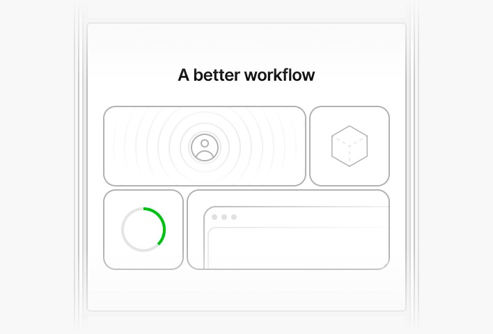

¿Qué es Tailwind CSS?
Tailwind CSS es un framework CSS de primera utilidad que permite a los desarrolladores diseñar interfaces directamente en el marcado HTML. Esto se logra mediante el uso de clases predefinidas, eliminando la necesidad de escribir CSS complejo y personalizado.
Su enfoque principal es ser modular y flexible, lo que facilita el desarrollo rápido de interfaces responsivas.
Ventaja clave: Reduce la necesidad de crear clases personalizadas, agilizando el diseño y mantenimiento del proyecto.
Conceptos clave
Clases Utilitarias (Utility-First)
Las clases utilitarias son la base de Tailwind. Son clases pequeñas que aplican estilos CSS individuales y específicos (como colores, tamaños, márgenes, padding, tipografía o flexbox).
Uso práctico
-
Instalación rápida (CDN)
Ideal para demostraciones o proyectos pequeños.
-
Instalación mediante npm
Recomendada para proyectos profesionales.
-
Instalación en frameworks populares
Tailwind CSS se integra fácilmente con los frameworks más usados actualmente.
Ventajas de Tailwind CSS
-
Desarrollo rápido
-
Responsive sencillo
-
Alta personalización
-
Integración con frameworks modernos
-
Reutilización de componentes
-
Rendimiento optimizado
-
Aprendizaje sencillo
-
Ideal para prototipado
-
Trabajo colaborativo
Consistencia visual
Clases más importantes
Permite controlar colores, espaciado, tipografía, disposición y efectos de forma rápida y consistente.
Conclusión
Tailwind CSS es una herramienta moderna y potente para desarrollar interfaces web rápidas, responsivas y visualmente consistentes. Su enfoque utility-first permite a los desarrolladores diseñar directamente en el HTML utilizando clases predefinidas, lo que acelera significativamente el proceso de desarrollo y evita la repetición de código CSS tradicional.
En conclusión, Tailwind CSS representa una evolución en la forma de escribir estilos en la web: combina velocidad, flexibilidad y coherencia, convirtiéndose en una de las herramientas más eficientes y populares entre los desarrolladores modernos para construir interfaces web profesionales, limpias y personalizables.